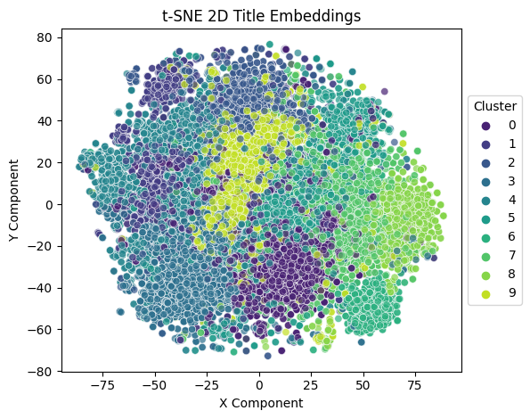
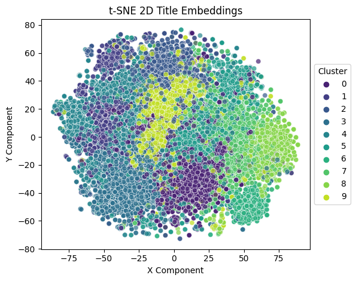

Introduction
Since working on my dissertation and learning about the advancements in natural language processing, I knew I wanted to work on a project involving transformer based models. I also thought that applying these models to patent data would demonstrate my interest in intellectual property, therefore accomplishing two of my objectives. My main aims were to gain insight into the data available on patents in the public domain, draw conclusions and analyse the data made available using these advanced methods of natural language processing, and learn more about transformer based models; how they work and what they’re capable of, in addition to learning about patents and intellectual property more broadly.
Background
Patent analysis is a significant area of interest for prospective applicants, intellectual property firms and their respective government patent offices alike. This is an important area of research because it helps to provide information on current trends, which can be very useful to IP firms in strategic planning, as well as identifying where to acquire specialist knowledge. Patent analysis can also be used by inventors during development in order to come up with solutions to technical problems. In addition, it can be used when deciding whether or not to pursue protection in the first place. Analytics on current patent trends can be very useful to companies when looking to make a strategic acquisition in order to benefit their business. It can also be used as a means to make valuations and assess a competitor's position in the market. Patent analysis is also very valuable to regulatory bodies and government agencies because understanding current trends help said entities make better decisions when assessing applications and setting precedents.
One aspect of a patent which can be analysed comparatively is the patent’s meaning, whether that be the patent’s title, abstract, full body text, diagrams, or all of the above. How similar two patents are in this respect is what is known as their semantic similarity. Another interesting technique which can be applied to written text is summarisation, that is, reducing the amount of text down from a relatively large amount of information to an amount less so, while still preserving the most crucial elements which provide the text with the context needed to understand its meaning. In order to conduct analysis of this kind, each patent needs to be represented as a feature vector, which in its simplest form is normally a dictionary mapping, also known as a tokenizer. However, what isn’t taken into account just through a tokenized feature vector is the context of the text as a whole, because each word can have different meanings depending on the sequence of words appearing before, and indeed after, each given word. The vector representation which takes into account this all important context is known as a word embedding.
Dataset
When I began work on this project my first objective was to find a dataset which would suit my needs. I wanted a dataset which was well structured and easy to query, with enough data to produce interesting results. At this point I was still unsure about exactly what I wanted to do with the data, one idea was to fine-tune a BERT model for classification, so I had searched for and found a dataset pertaining to the EPO (European Patent Office) boards of appeal decisions, with the hope of training a classifier to predict the likelihood whether a patent appeal would be accepted or rejected. It turns out that while the dataset is ‘free’ you have to pay an annual processing fee for access. The EPO does also have a search query feature called Espacenet, however, I could not find a way to download the data in bulk so this was out of the question.
It was at this point I discovered that the USPTO (United States Patent & Trademark Office) offered a similar search query service to Espacenet called PatentsView. This service allowed keyword queries to be submitted and returned the results in bulk, with the options to download in a number of formats. I also discovered BigQuery through reading a research paper on patent analysis which had mentioned it as the source of their dataset, however, I decided to use the PatentsView service simply due to ease of use. I made a total of 10 queries which returned around 16,000 unique entries saved in CSV format, across what I deemed to be a comprehensive list of terms which may be included within the patents I was interested in. Of course, I was sure that the list was non-exhaustive but I was quite happy with the amount of data I had access to. Included within each CSV file were 4 fields; patent_abstract, patent_date, patent_number and patent_title. From these four fields I had more than enough data to successfully achieve my goals.
Models
Both models I used are different variations of the transformer model architecture, which was first proposed in the seminal paper Attention Is All You Need, published by Google in 2017. The two models I leveraged while working on this project were as set forth:
BERT, also known as bidirectional encoder representations from transformers, published in a research paper by Google in 2019, is essentially the encoder architecture of a transformer. It takes in a sequence, which for a standard size BERT model is usually a maximum length of 512 tokens, and returns an encoded sequence, which for this case we can refer to as a sentence embedding. In a machine language translation task, which was the original purpose of the transformer architecture, the encoded input would then be passed to a decoder, however, for this case we just want the vector representation of each input. I used the Sentence Transformers library to gain access to the Tiny-BERT model which had been specifically pre-trained for the task of producing sentence embeddings to be used for semantic similarity search.
BART, also known as bidirectional and auto-regressive transformer, published in a research paper by Facebook in 2019, is a full encoder-decoder transformer model based on Google’s BERT encoder and OpenAI’s GPT (generative pre-trained transformer) decoder, with adjustments to their training schemes in order to help with ‘de-noising’. BART is good for seq2seq tasks such as machine language translation, natural language generation and of course, in this case, summarisation. I used the HuggingFace transformer library to gain access to a pre-trained large (1024 input nodes) BART model which had been specifically fine-tuned on a CNN summarisation task.
I thought it would be amusing to add that when I was first looking into utilising models of this kind I was naive enough to think I could continue pre-training, which is the process of updating the entire network weights with the dataset I had produced, rather than fine-tuning where only additional or specific layers are updated. Just the process of loading some of the HuggingFace transformer models into video memory was too much for my lowly GeForce GTX 1050 with only 2GB of VRAM. For example, the pre-trained BART model which I used for summarisation has around 406 million parameters, which would require a lot more video memory than I had available.
Results
Feature Extraction
The first step in the process was to compile all of the separate query CSV files together into one single dataframe and drop any duplicates. After which, both the patent title and abstract embeddings were calculated by simply running the text through the chosen model, which returned a Numpy array of shape (16803, 1,768). 16,803 being the total number of patents in the batch, and 768 being the output dimension of this particular BERT model. Following that, I ran the patent abstracts through the BART model in order to generate the summaries, and did so with a batch size of 128, simply due to hardware constraints. I then generated summary embeddings in the same way I had with both the title and abstract embeddings, just in case I needed them at a later date. Following that, I added each field to the dataframe as a series and saved the embedding dataframe to a CSV file.
Dimensionality Reduction
In order to visualise n-dimensional data where n is very large, dimensionality reduction is necessary. Dimensionality reduction in some cases can be used to improve the performance of machine learning models by consolidating features and reducing noise. In this particular case, the two algorithms used to perform dimensionality reduction were PCA (principal component analysis) and t-SNE (t-distributed stochastic neighbour embeddings), and were used solely for the purpose of visualisation. The main difference between PCA and t-SNE is that PCA is deterministic and t-SNE is not. These two algorithms are among the most popular methods of dimensionality reduction in machine learning, alongside autoencoders. I used scikit-learn to implement both PCA and t-SNE, and chose to visualise the title embeddings in preference over the abstract embeddings, reducing their dimensionality from 768 to 5 and 2 respectively. PCA achieved an explained variance ratio between 0.8-0.9 across its 5 components.
The graphs below are visualisations of both the PCA and t-SNE title embeddings. For the PCA embeddings each datapoint has an X, Y and Z component, with the final two components being represented by the colour and size, and the cluster for which each datapoint has been assigned (by k-means clustering) is represented by each unique shape. In regard to the t-SNE embeddings, only an X and Y component needs representation, and each unique colour indicates the cluster to which the datapoint has been assigned.
 

K-Means Clustering
I assigned each patent to a cluster based on their title embeddings using the k-means clustering algorithm, implemented with scikit-learn. K-means clustering is an unsupervised learning algorithm whereby centroids are randomly assigned in the embedding space, after which, each n-dimensional vector is assigned to a cluster determined by the most proximal centroid. At every step in the training process until convergence, each centroid’s position is updated based on the average of all the vectors which had been assigned to that particular cluster. Upon the re-assignment of each centroid, the re-assignment of each vector is executed in the same way that they were initialised, after which the process continues. I decided on setting the number of centroids, referred to as k, to 10, which was the same number of search queries I made using PatentsView. I recorded both the cluster label (0-9) and corresponding centroid vector for every patent in a new dataframe.
Measures of Similarity
The three most common metrics used to compare the similarity between two vectors are cosine similarity, manhattan distance and euclidean distance, in order of effectiveness as it relates to working with high dimensional data.
Cosine similarity is simply the cosine of the angle between two vectors, hence, two vectors which are aligned with an angle of 0 degrees would have a cosine similarity of 1. In this case, it is calculated by dividing the dot product of the two vectors by the product of each vector’s L2 norm.
Manhattan distance is the orthogonal distance between each vector, and is calculated as the sum of the magnitudinal difference between each component in both vectors. Manhattan distance is said to be more effective at estimating the similarity between two vectors than Euclidean distance at higher dimensions. Manhattan distance is also known as the L1 norm in linear algebra.
Euclidean distance is the straight line distance between two vectors and is the shortest distance between said vectors. I calculated it with Numpy as the L2 norm of the difference between the two vectors.
I created a visualisation in 2 dimensions of the three metrics I used to gauge similarity, since high dimensional data is particularly hard to conceptualise.
Patent Matching
I recorded the similarity metrics for every patent in the dataset, in comparison to a random sample of 6 patents, with one taken from each decade between the 1970s and 2020s. After every patent had been evaluated with respect to the patents in the random sample, the dataframe was sorted by each category and the top 5 matches were returned. For cosine similarity, the top 5 highest scoring patents for each decade were taken, unlike manhattan and euclidean distance where we used the top 5 lowest scoring patents. The heat maps below show this information, including the patent numbers of said matches. In addition, I created a carousel using Bootstrap to display more detailed information on both the patents in the sample, as seen on the left side of the screen, and their corresponding matches on the right side of the screen. Interestingly, it seems that there have been multiple patents granted with only slight variations to key details, which my system matched with the patent sampled from the 1990s. This observation is a key indicator that this method of patent matching by semantic similarity search is very effective. In fact most of the matches demonstrate key similarities upon further reading.
Conclusions
One conclusion which is readily apparent from the distribution of the data is that the number of patents granted in the domain of machine learning and artificial intelligence has grown exponentially, particularly over the last 5-10 years. Another interesting observation is that the type of patents, as assessed by the clusters to which they were assigned, granted within said domain, has changed somewhat over the years. The implication being that machine learning and artificial intelligence patents being granted now are different in nature than patents being granted over a decade ago, something which you might expect. It is important to note that these conclusions can only be made for patents in the US, and even then I am expecting that the dataset I had access to is only a subset of the total patents available in this field. Even with these acknowledgements, I think it would be fair to assume that the data is analogous to the data on patents granted in European countries. Overall, I would judge the methods used in this project as being quite effective. BERT managed to effectively encapsulate semantics, BART successfully generated meaningful and coherent summaries, and my methods of evaluating the similarity between two BERT embeddings worked very well.